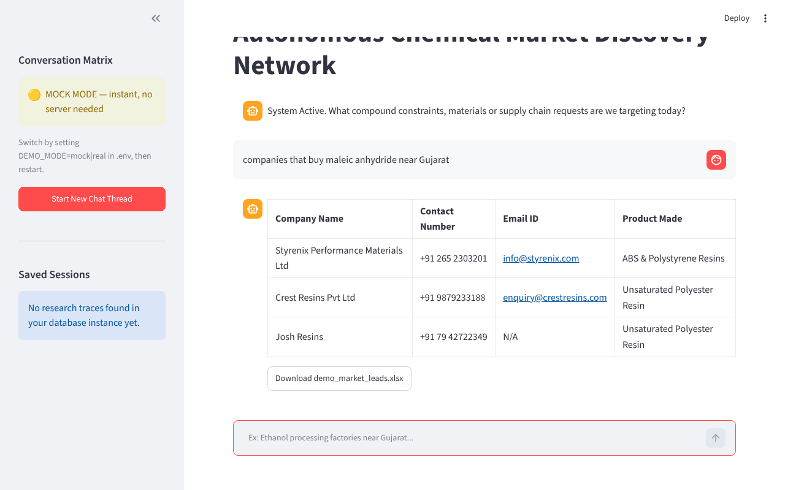
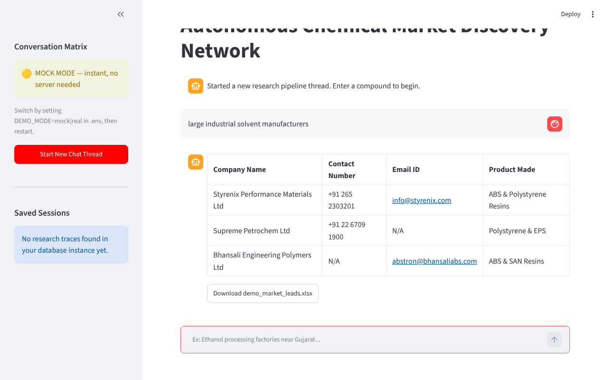

Type “companies that buy maleic anhydride near Gujarat” and get an export-ready spreadsheet of real manufacturers who likely need it — with contact details, and honest blanks where a detail couldn't be verified.
The demo runs in offline “mock” mode on a free host — the first load can take up to a minute to wake up.

Sales teams at chemical suppliers need to find buyers for a product. But manufacturers advertise what they sell, not what they buy — so searching the web for “companies that buy maleic anhydride” returns nothing useful. Doing it by hand means hours of chemistry reasoning, searching and copying contact details out of website footers.
Catalyst reasons one step down the supply chain first, then searches for the companies that make the downstream product.
The framework's stock Firecrawl wrapper can't disable onlyMainContent, which strips the footer. The tools here call the client directly.
Regex pulls emails and phones in Python, so each call returns ~50 tokens instead of a 25,000-character page — viable on a free-tier token budget.
CAS numbers, dates and timestamps look like phone numbers. Matches must carry a + or tel: link; otherwise the field is N/A.
Every agent emits N/A for unverifiable fields, and the UI and Excel export highlight them.
One .env line switches between an offline demo with real Python filtering and the live pipeline.
60 s model timeout, bounded orchestration, tracing off by default, and rate limits shown as a calm message rather than a stack trace.

| Layer | Choice |
|---|---|
| Agent framework | Agno — Agent, Team |
| Model | openai/gpt-oss-120b via Groq's OpenAI-compatible API |
| Search + scraping | Firecrawl |
| UI | Streamlit |
| Session store | Postgres |
| Export | pandas + openpyxl |